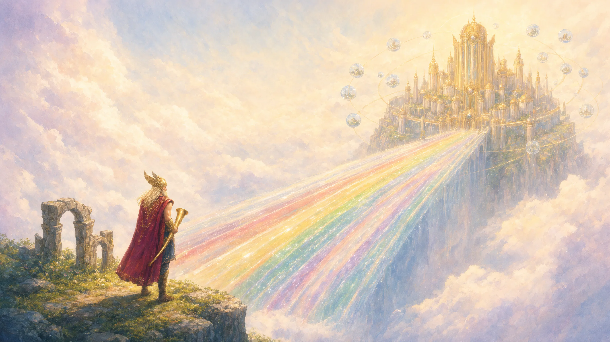
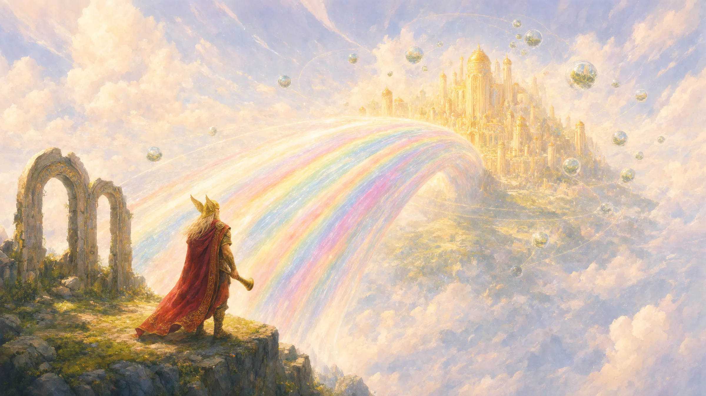

Problem 1: Review
Big diffs get a quick yes.
A reviewer cannot read 77,000 lines. So the reviewer types LGTM and hits merge.

Heimdall guards your main branch. Tests come from the ticket. Reviewers bring proof. A person approves the exact commit.
Built on Switch. Open source. All Go.
A real ticket. A real run. 2:38.
629 files. One pull request.
This one is ours. Agents wrote most of it. Nobody reads all that.
A reviewer cannot read 77,000 lines. So the reviewer types LGTM and hits merge.
The agent writes the code and the tests. Tests that pass with or without the feature prove nothing.
Heimdall fixes both. Reviewers that know what your developers know. And red tests, written from the ticket, before the code.
These are real screens from our live runs, with names replaced. Scroll from a ticket to a finding with proof.
The ticket holds the money rules and the acceptance criteria. Heimdall polls Jira, so the VM needs no public URL.
Each agent has its own identity in Switch. People talk to it in the channel. Here a developer tells it a rule in plain words.
Heimdall runs them in a locked container with no network. A test that passes before the feature exists gets rejected.
TestPutNoteOnNonexistentRefundReturns404passed without the feature on baseREJECTEDA developer raises the pull request and the tests pass. Then three reviewers start, cut off from each other, so one mistake cannot spread.
A reviewer found this real bug and wrote a failing test as proof. A finding with no proof cannot block the merge alone.
Prooffunc TestRefund_CumulativeCap(t *testing.T) { p, err := svc.Create("merch_1", 100, "USD") if err != nil { t.Fatal(err) } _, err = svc.Refund(p.ID, 60) if err != nil { t.Fatalf("first refund of 60 should succeed") } _, err = svc.Refund(p.ID, 60) if err == nil { t.Error("second refund of 60 must be rejected") } }
The same finding appears on the pull request and in your chat. The reply happens where your team already works.
The whole story ran here, from ticket to merge.
Test progress, findings and review cards.
Both stories, in one group.
Bridged channels and typed commands.
Line comments and the required check.
A ticket in progress opens a room and starts an agent.
Heimdall captures what each developer knows: their docs, their history and their coding sessions. Secrets go first. The developer approves it, and only then does their own reviewer read it.
docs/adr/ADR-004.mdRefunds are idempotent by Idempotency-KeyINC-031.mdrefund_ref removal broke the ledger[git:3f2a1c][pr:#88]A temporal graph of team decisions and incidents. This view shows the design.
No model in that path. A short pure function reads the facts and fails closed. Press a rule to see the result.
a person approves commit 26058a1, or nothing merges
Paste it into your coding agent. It connects GitHub, Jira and your chat. It drafts your context pack, and it saves nothing before you approve.
Set up Heimdall for this repository. 1. Clone https://github.com/prathameshk421/Heimdall and read the README. 2. Install the Heimdall skills from the skills/ folder. 3. Connect to Switch. 4. Draft my context pack. Show it to me. Do not save it before I approve it. 5. Connect GitHub, Jira and our team chat. 6. Make "heimdall/gate" a required check.
$ heimdall admin init✓ config written · secrets owner-only$ heimdall connect github$ heimdall connect jira$ heimdall connect slack$ heimdall doctor✓ github ✓ jira ✓ switch ✓ chat$ heimdall pack refreshdraft ready · waiting for you
No. An AI reviewer comments on a diff. Heimdall starts at the ticket and has tests written first. Reviewers must bring proof, and a required GitHub check stays red until plain code says that all ten rules are met.
No. Agents find problems and fix them. An approval counts only from a person who is not the author, and only on the head commit. There is no model in the decision path.
A test that passes without the feature proves nothing. Heimdall runs each new test on the base commit in a locked container. If it passes there, Heimdall rejects it. The tests that survive are pinned by hash.
The whole story ran on Slack: ticket, tests, three reviews, two real findings, the fix, a human approval, a green gate and the merge. Context packs and Graphiti memory are built and tested, but have not run on the live server. The README keeps the full list.
It means that the change has evidence and a person approved it. Heimdall makes merges safer. It does not replace your CI or your security checks, and it does not promise code without bugs.
